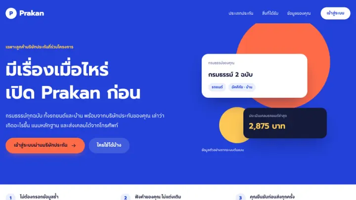
Prakan: 80 of 80 pass
Node's test runner checks that made-up AI output fails closed and that no ID or address reaches the model.
Prapathomsit Attapakkanon · ประปฐมสิทธิ อัตถ์ภาคนนท์
I write Playwright tests in TypeScript and run them on GitHub Actions. My SauceDemo suite passes 12 of 12 runs in Chromium, Firefox and WebKit.
A git push, or the daily cron at 02:00 Bangkok time, starts GitHub Actions. Four tests run in each of three browsers.
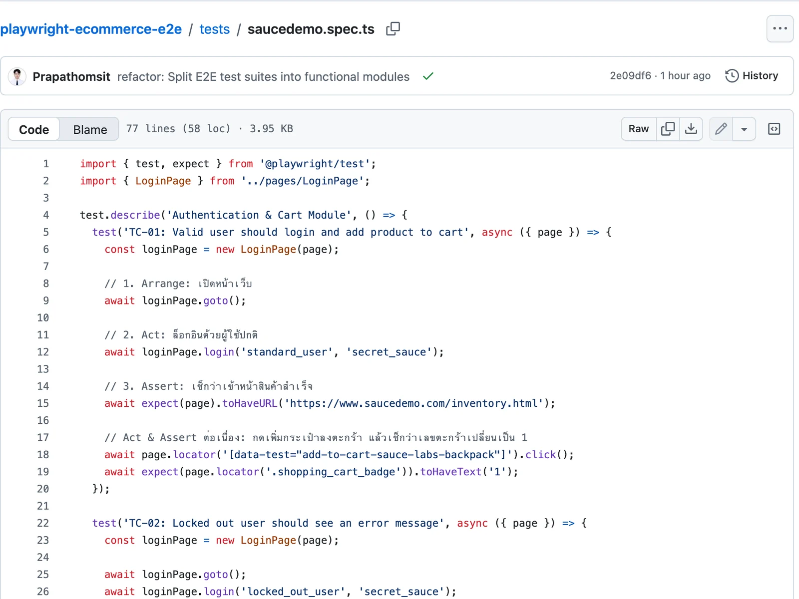
On problem_user, typing a last name overwrites First Name. The test asserts that behaviour, so the run fails if it changes.
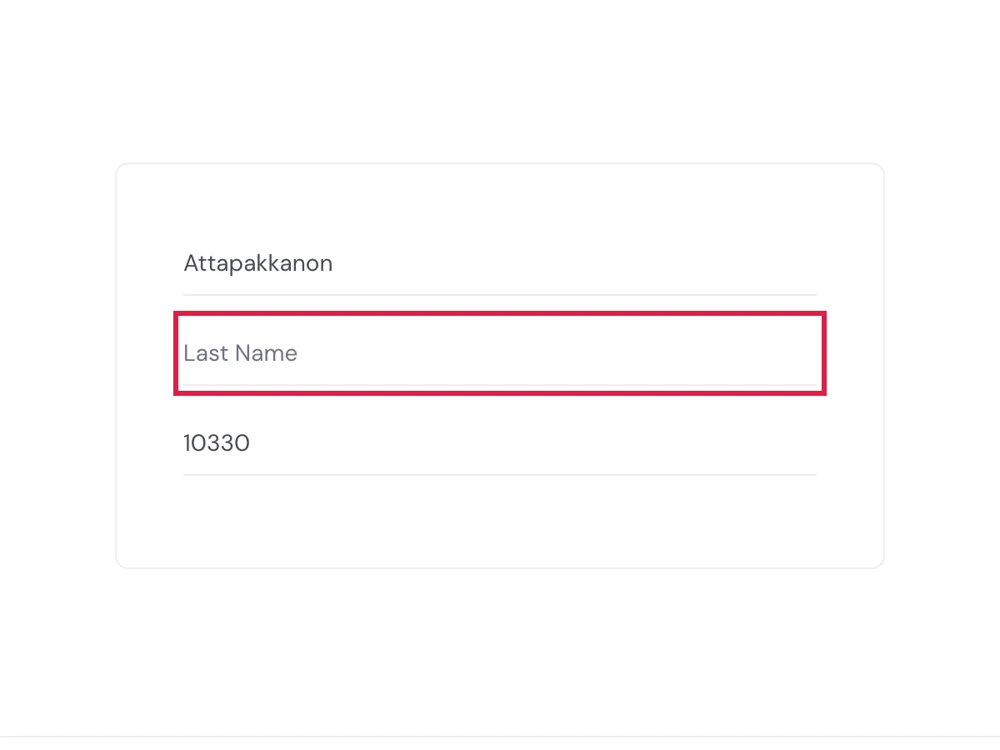
A custom reporter posts each result to an Apps Script webhook. Every row links back to its GitHub Actions run.
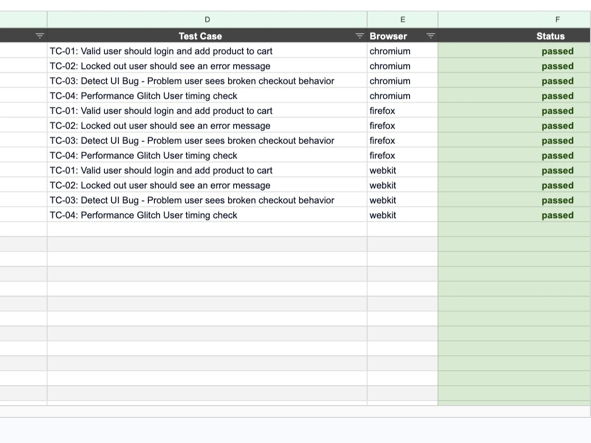
Locators live in one Page Object, pages/LoginPage.ts, so a UI change means editing one file. Times are WebKit on CI.
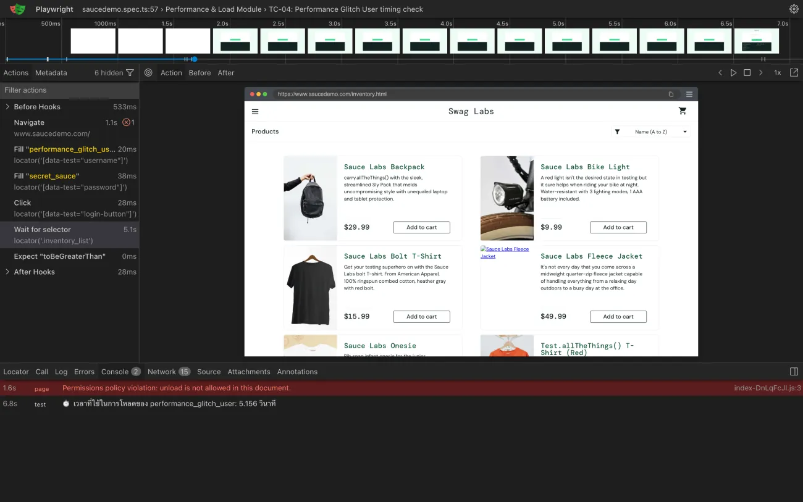
Three projects outside the SauceDemo suite, each tested the way its subject needed.

Node's test runner checks that made-up AI output fails closed and that no ID or address reaches the model.
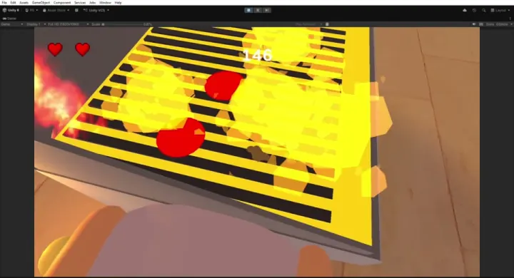
Player Test and Trap test scenes check each mechanic alone before it joins the main level.
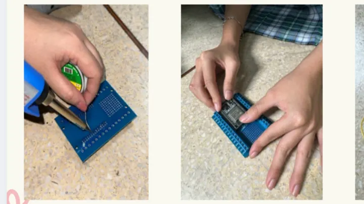
Our team measured detection from 25 to 100 cm, then timed a blindfolded walk with and without the device.
How I test
Most of my projects come from hackathons, where a demo that breaks on stage loses. So I test the unhappy paths first: bad input, missing permissions, double submits and AI output that makes things up.
Made at game jams, hackathons and school. The clips are real gameplay; each card links to the full video or a build you can play.
A 3D investigation RPG where villagers answer through the ChatGPT API. I led the team.
Steer a potato man out of a crisp factory. Top committer on the team repo, 44 commits.
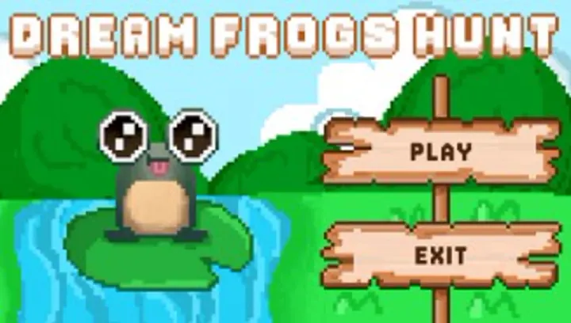
I wrote the enemy wave spawner. Version two reworked the game from player feedback.
A site for sharing investing knowledge, built in 48 hours. I built the Firebase login and profiles.
A 2D platformer: an alien courier carries an energy core across planets full of random traps.
Roll across letter tiles to spell the target word. I built the walls, colliders and tiles.
Pitched at a bootcamp and a hackathon as designs and prototypes, with no public build yet.
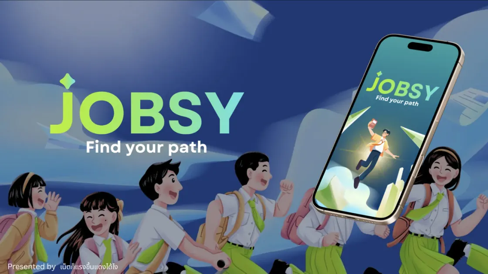
Teens try a career through story mini-games, then AI matches their choices to O*NET skill profiles. I led the team; we surveyed 100 students aged 13 to 18.
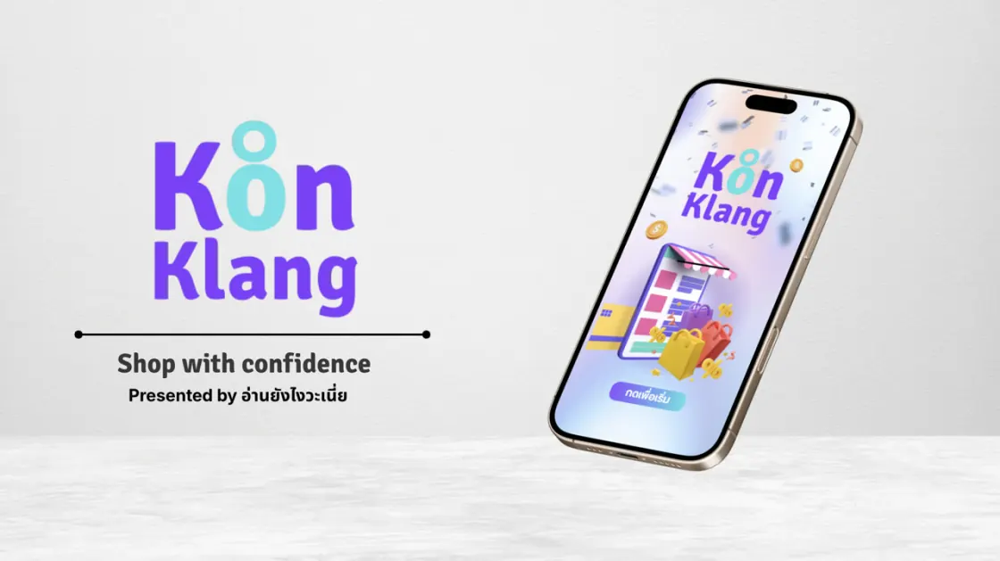
Escrow for chat-based online shopping: the money waits until delivery is confirmed, and packing videos tied to QR codes settle disputes. Built in 48 hours.
Newest first. Game jams, hackathons and one national contest; the linked rows open their certificate.
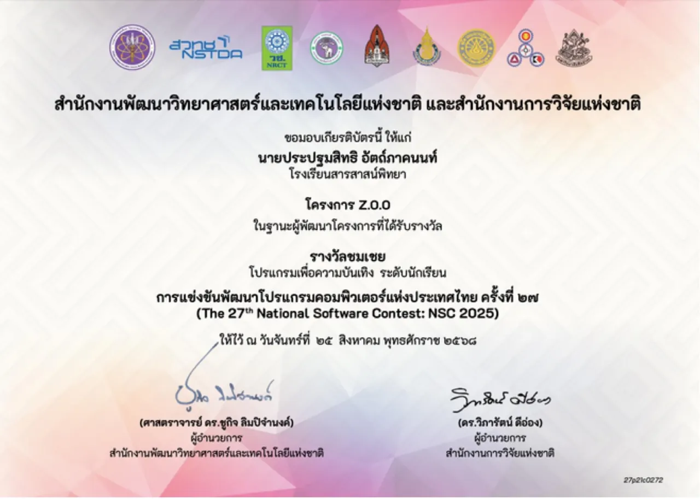